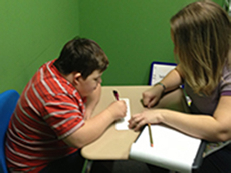
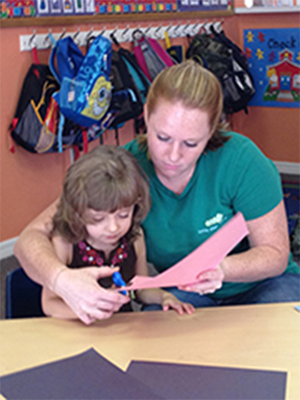

Education for children diagnosed with Autism
and other developmental delays.

Education for children diagnosed with Autism
and other developmental delays.
We offer 1:1 full and part time or 2:1 full time programs with the option of a 41-week or year-round school year. Each child is assessed using either ABLLS-R or VB-MAPP to create an individualized acquisition program and includes Sunshine State Standards. Specific behavior plans will be developed by Board Certified Behavior Analysts to target problem behaviors unique to each child. Functional and independent living skills are incorporated into the child's daily school routine.


We have a half-day program for children 18 months to 4 years old who are discovered to have or may be at risk of developing a developmental delay. Child development research has established that the rate of human learning and development is most rapid in the preschool years. Timing of intervention becomes particularly important when a child runs the risk of missing an opportunity to learn during a state of maximum readiness. If the most teachable moments or stages of greatest readiness are not taken advantage of, a child may have difficulty learning a particular skill at a later time. We work closely with parents to develop an age-appropriate program used to address specific target skills and behaviors.
At Little Star, we understand that some parents' work schedules may overlap with school hours. We offer before or after school care for those parents that are unable to drop-off or pick-up their child at regular school hours. Before and After School Care must be scheduled in advance to ensure sufficient staffing.
Little Star Center offers an in-home therapy component to target behaviors that are not exhibited in the school environment and to teach functional skills in the home environment using applied behavior analysis. The in-home therapist will also work with the parents and caregivers to ensure that therapeutic components are carried out throughout the child's daily routine.